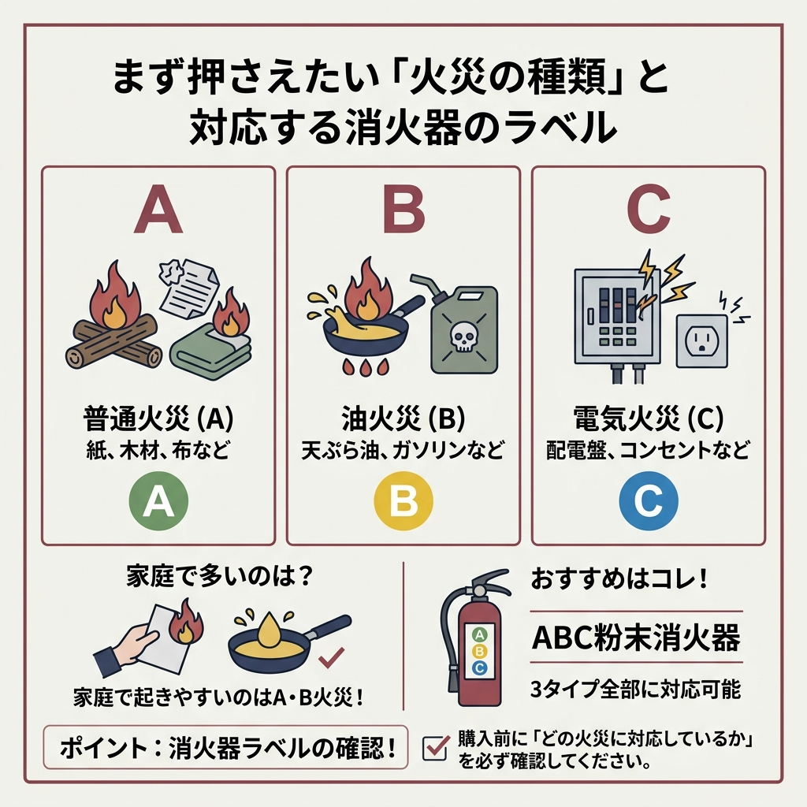
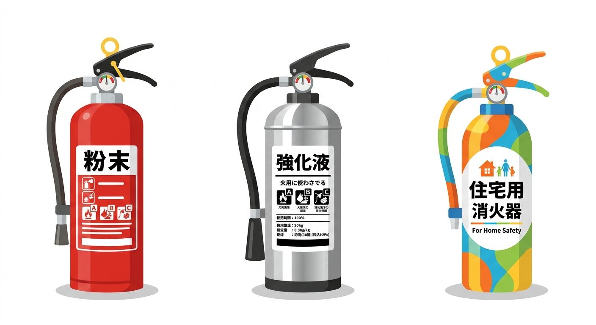
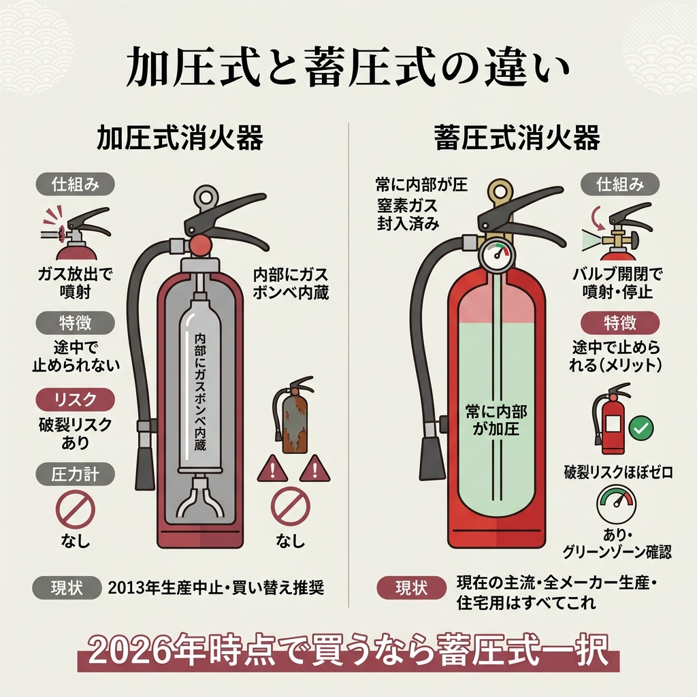
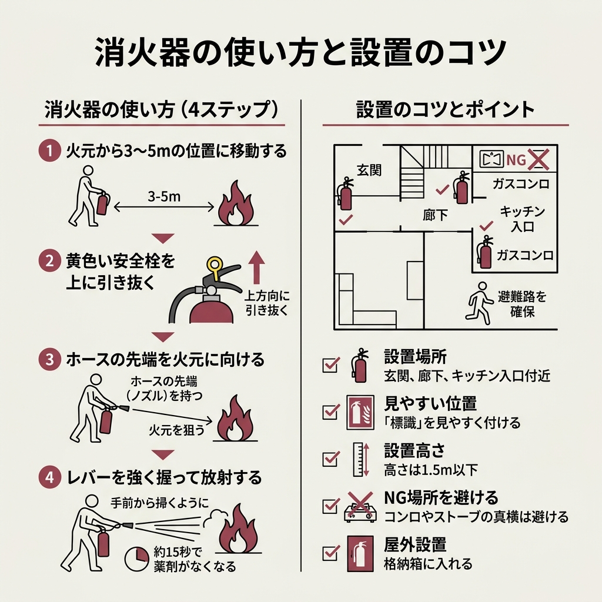
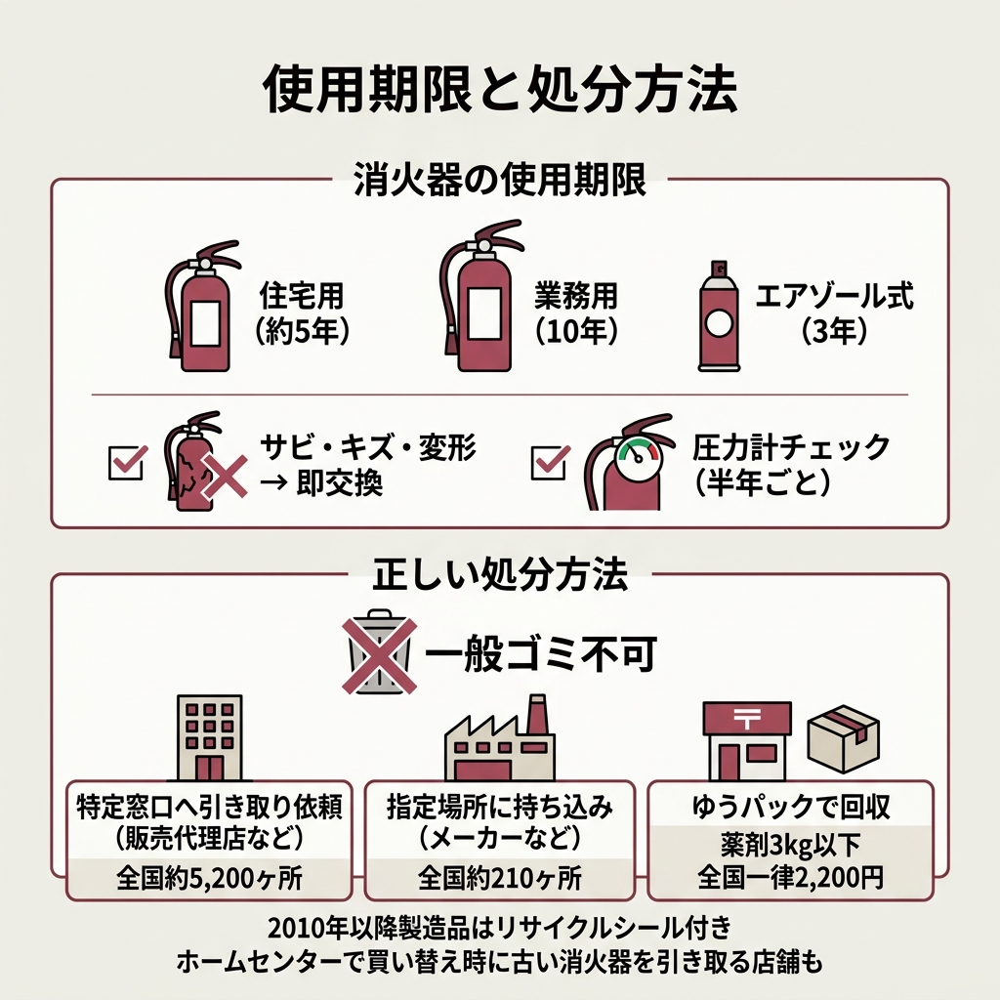

「うちにも消火器、置いた方がいいのかな」と思いつつ、そのまま何年も過ぎていませんか。
いざホームセンターやネットで探すと、粉末・強化液・住宅用・業務用……と種類が多すぎて、どれを選べばいいか分からなくなるんですよね。
上位の情報サイトを片っ端から読み比べてみたところ、選ぶときに見るべきポイントは5つに絞れることが分かりました。
火災の種類、薬剤タイプ、住宅用か業務用か、サイズ（型）、そして加圧式か蓄圧式か。
この記事では、消火器の選び方を判断基準ごとに整理しています。
条件別に「この場合はこっち」と分かるようにまとめたので、ぜひ参考にしてみてください。


消火器を選ぶとき、最初に確認してほしいのが「どんな火災に対応しているか」です。
日本消火器工業会では、火災をA・B・Cの3タイプに分類しています。
| 分類 | 火災の種類 | 具体例 |
|---|---|---|
| A火災 | 普通火災 | 紙・木材・布など |
| B火災 | 油火災 | 天ぷら油・ガソリンなど |
| C火災 | 電気火災 | 配電盤・コンセントなど |
業務用消火器にはA・B・Cのマークが付いていて、どの火災に使えるか一目で判別できます。
家庭で起きやすいのはA火災（紙・布）とB火災（キッチンの油）がほとんどですね。
個人的には、ABC粉末消火器を1本置いておけば3タイプ全部カバーできるので、迷ったらこれが無難だと思います。
消火器の中身（薬剤）は大きく分けて粉末系・水系・ガス系の3種類あります。
ただ、一般家庭やオフィスで候補になるのは粉末と強化液の2択がほとんどです。
もっとも普及しているのがこのタイプ。
ABC粉末消火器なら普通火災・油火災・電気火災のすべてに使えます。
価格は約4,000円と手ごろで、消火力の目安は水バケツ9杯分に相当するとのことです。
放射時間は約15秒なので、短時間で一気に消し止める即効性が強みですね。
ただし粉末が飛び散るため、消火後の掃除がかなり大変というデメリットもあります。
水系の薬剤で、天ぷら油の火災に特に強いタイプです。
放射時間は30〜70秒と粉末より長く、冷却効果や浸透性にも優れています。
サーバールームやキッチンのように、粉末の飛散を避けたい場所に向いていますね。
価格は約8,000円で、粉末の2倍くらいになります。
中性タイプの強化液消火器もあり、こちらは約10,000円です。
機械泡消火器（約150,000円）、水消火器（約12,000円）、二酸化炭素消火器（約23,000円）といった種類もあります。
ただ、これらは特殊用途向けなので一般家庭で選ぶ場面はほぼないと思います。
キッチン用に1本買うなら、粉末と強化液どっちがいいの？
天ぷら油の火災が心配なら強化液がおすすめ。コスト重視ならABC粉末でも問題なく対応できますよ。
| 項目 | 粉末消火器 | 強化液消火器 |
|---|---|---|
| 価格 | 約4,000円 | 約8,000円 |
| 放射時間 | 約15秒 | 30〜70秒 |
| 得意な火災 | ABC全般 | 油火災に特に強い |
ここが意外と迷うところなんですよね。
「家に置くなら住宅用でしょ」と思いがちですが、実は業務用を家庭に置くのもアリです。
両者の違いを整理してみました。
| 項目 | 住宅用消火器 | 業務用消火器 |
|---|---|---|
| 使用期限 | 5年（エアゾール式は3年） | 設計標準使用期限10年 |
| 法定点検 | 義務なし | 6ヶ月ごと |
| 外観 | カラフル・軽量 | 容器の25%以上が赤色 |
| 操作性 | 蓄圧式で扱いやすい | 消火能力を示す能力単位あり |
消防庁の情報によると、住宅用消火器は軽量でデザインもカラフルなものが多く、インテリアになじみやすいのが特徴です。
蓄圧式なので操作もシンプルで、点検義務もありません。
一方、業務用は消火能力が高く、使用期限も10年と長持ちするのがメリットですね。
ただし6ヶ月ごとの法定点検が必要で、外観も赤色がメインになります。
消火器には「型」というサイズ区分があります。
上位記事を全部読み比べた結論として、家庭・オフィスなら10型が最もバランスが良いです。
もっとも売れ筋のサイズです。
放射時間は13〜15秒あり、一般的な初期消火には十分な性能ですね。
価格帯も手ごろなので、迷ったらまず10型を検討してみてください。
10型よりコンパクトで、力に自信がない方でも扱いやすいサイズ。
放射時間は10型と同じ13〜15秒ですが、消火能力はやや下がります。
燃えやすい物が多い倉庫や工場向けのサイズです。
放射時間は18〜20秒と長めですが、そのぶん重量があります。
50型（薬剤量20kg）になると車輪付きで、放射時間は45〜47秒にもなるみたいです。
うちのマンション、どのサイズを置けばいい？
一般的な住宅やマンションなら10型で十分です。高齢の方だけのご家庭なら6型も検討してみてください。

消火器の内部構造は「加圧式」と「蓄圧式」の2タイプに分かれます。
結論から言うと、2026年時点で買うなら蓄圧式一択です。
内部にガスボンベを内蔵していて、レバーを握るとボンベの封板が破れてガスが放出される仕組みです。
消火薬剤がノズルから一気に噴射されるので、途中で止められないタイプがほとんどですね。
容器にサビやキズがある状態で使うと、急激な加圧で破裂するリスクがあります。
消火器本体にあらかじめ窒素ガスが封入されていて、常に内部が加圧されています。
レバーを握ればバルブが開いて薬剤が噴射される仕組みで、レバーを離せば途中で止められるのが大きなメリットです。
万が一、容器に穴が開いてもガスが徐々に抜けるだけなので破裂の心配はほぼありません。
圧力計が付いているので、ゲージの針がグリーンゾーンにあるかチェックするだけで状態が分かります。
消火器選びで後悔しているケースを調べてみると、同じようなパターンが目立ちます。
消火器には日本消防検定協会が発行する「国家検定合格証」のマークが付いています。このマークがないものは避けてください。
住宅用消火器は消防法上の設置義務を満たしません。飲食店や露店、オフィスなど設置義務がある場所には必ず業務用を選んでください。
住宅用は5年、業務用は10年が使用期限です。期限を過ぎると薬剤の噴射不良や容器の腐食リスクが上がります。
直射日光が当たる場所や湿気の多い場所に置くと、使用期限内でも劣化が進みます。格納箱を使うなどの対策が必要です。
ネットで安い消火器を見つけたんだけど、大丈夫かな？
価格だけでなく「国家検定合格証」のマークが付いているかを必ず確認してください。マークがない製品はどれだけ安くても選ばない方が安全ですよ。

消火器は買って終わりではなく、いざというとき使えなければ意味がありません。
上位サイトに共通して書かれていた使い方の手順をまとめました。
消火器の放射距離は7〜8m程度ですが、離れすぎると薬剤が届く前に飛散してしまいます。安全を確保しつつ適度に近づいてください。
レバーの根元にある黄色いピンを、上方向に強く引き抜きます。これでレバーが握れるようになります。
ホースを外し、必ず先端（ノズル）を持って狙いを定めてください。根元を持つと狙いが定まりません。
手前からほうきで掃くように火の根元を狙って放射します。粉末消火器なら約15秒で薬剤がなくなるので、的確に狙いましょう。
消火器の役割範囲は、天井に炎が到達する程度までの火災規模が目安です。天井に燃え移ってしまった場合は無理せず避難を優先してください。
日本消火器工業会
玄関、廊下、キッチンの入口付近が定番の設置場所です。
火元の真横より、避難路を確保できる位置に置くのがコツですね。
物置やクローゼットの奥にしまい込むと、いざというとき取り出せません。
屋外に設置する場合は、格納箱に入れて風雨から守ってください。

消火器にも使用期限があるのは知っていましたか。
住宅用はおおむね5年、業務用は設計標準使用期限が10年です。
エアゾール式の簡易消火具は3年と短めなので要注意。
期限内でも、サビ・キズ・変形がある場合は即交換した方が安全です。
蓄圧式消火器なら、圧力計の針がグリーンゾーンにあるか半年に1回はチェックしてみてください。
消火器は一般ゴミとしては出せません。
消火器リサイクル推進センターが指定する方法で処分する必要があります。
2010年1月以降に製造された消火器にはリサイクルシールが付いています。
シールがない場合は別途シール代がかかりますね。
ホームセンターでも新品購入時に古い消火器を引き取ってくれる店舗があるので、買い替えのタイミングで聞いてみるのが効率的だと思います。
消火器の選び方をひと通り整理してきました。
結局、家庭用で1本選ぶなら何がいいの？
迷ったら「蓄圧式の10型ABC粉末消火器」がおすすめです。4,000〜5,000円台で手に入りますし、全火災タイプに対応できます。キッチンの油火災が特に心配なら、強化液消火器を追加で1本置くと安心ですよ。
正直、消火器って「使わないまま期限が切れる」ことが大半です。
でも、いざというとき手元にあるかないかで、被害の大きさがまるで変わります。
この記事を読んだ今日が、備えるいいタイミングだと思います。